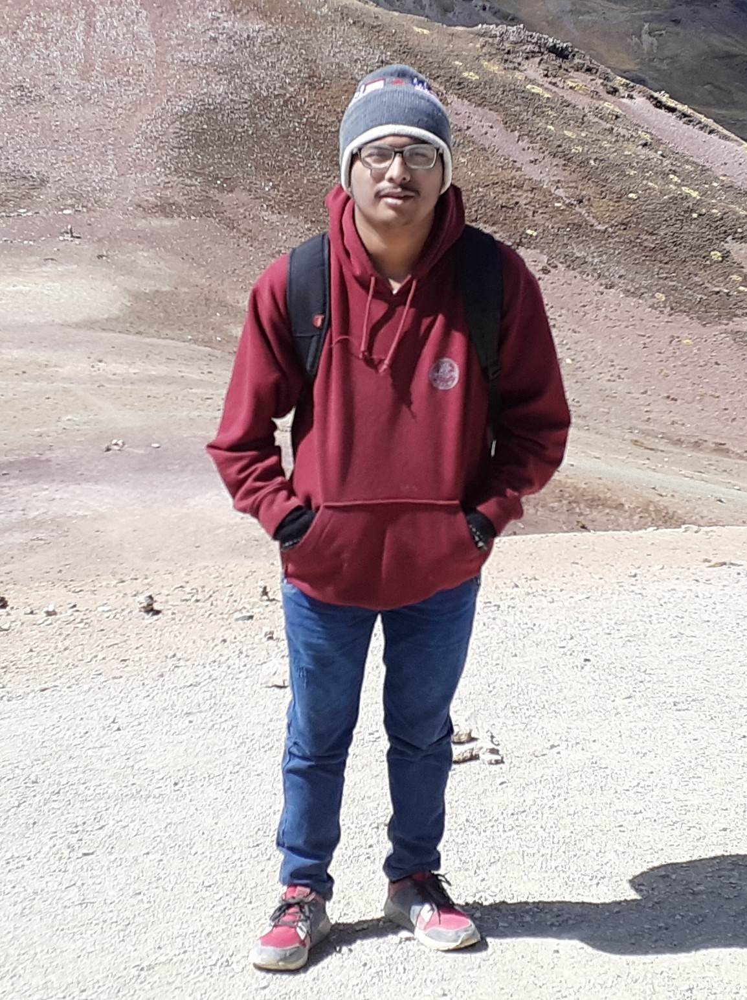

Autobiografía
Mi nombre es Rogger Yul Yañez Marchand ,yo nací el 24 de agosto de 2002 en la provincia de Chincha(ICA), el nombre de mis padres son Edgard Jose Yañez Mortola y Veronica Elvira Marchand Vita,tengo uno hermano que se llama Zander Joshua Yañez Marchand y una hermana que se llama Astrid Alisson Yañez Marchand.A los 8 años me mudé a Lima,yo estudie en el colegio Ingenieros que actualmente se llama ahora Technology Schools,ahi estudie hasta 5° de primaria,ya que en 6° me fui a Chincha a estudiar en colegio Ada A.Byron hasta 1° de secundaria, luego regresé a Lima y terminé mi secundaria en el Technoly schools.Sobre mí les puedo decir que soy un poco tímido,no suelo hablar con muchas personas por lo que general no tengo tantos,pero a los pocos amigos que tengo es quienes tengo más confianza,puesto ellos me lo demostraron y gracias a ellos fue que poco a poco yo empece a comunicarme más con las personas.Sobre lo que me gusta hacer es escuchar música,eso me ayuda mucho especialmente cuando estoy estresado, me gusta jugar videojuegos, ver peliculas de terror o ver series de casos criminales eso me gusta mucho. Actualmente tengo 18 años,estoy estudiando en la Universidad San Ignacio de Loyola la carrera de Ingeniería de Sistema de Información que muy pronto cambiará su nombre a solo Sistema de Información.mis metas son simples terminar mi carrera universitaria y hacer que mis padres se sientan orgullosos de mí, puesto lo han dado todo por darme una educación a mí y a mis hermanos.
Aquí pueden entrar a las páginas de mis compañeros.